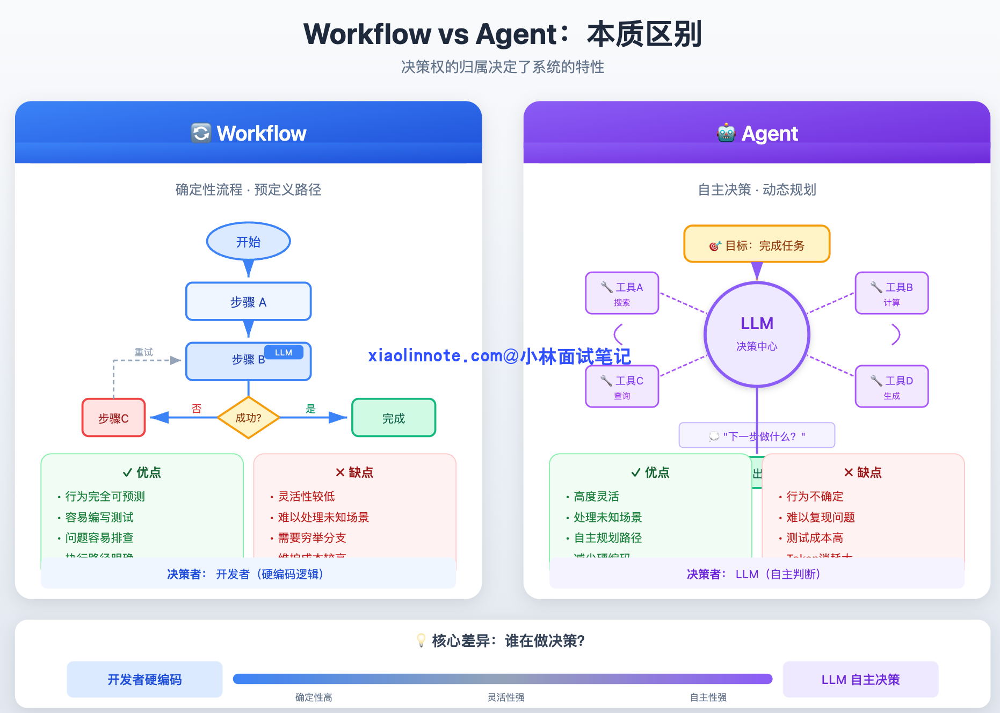
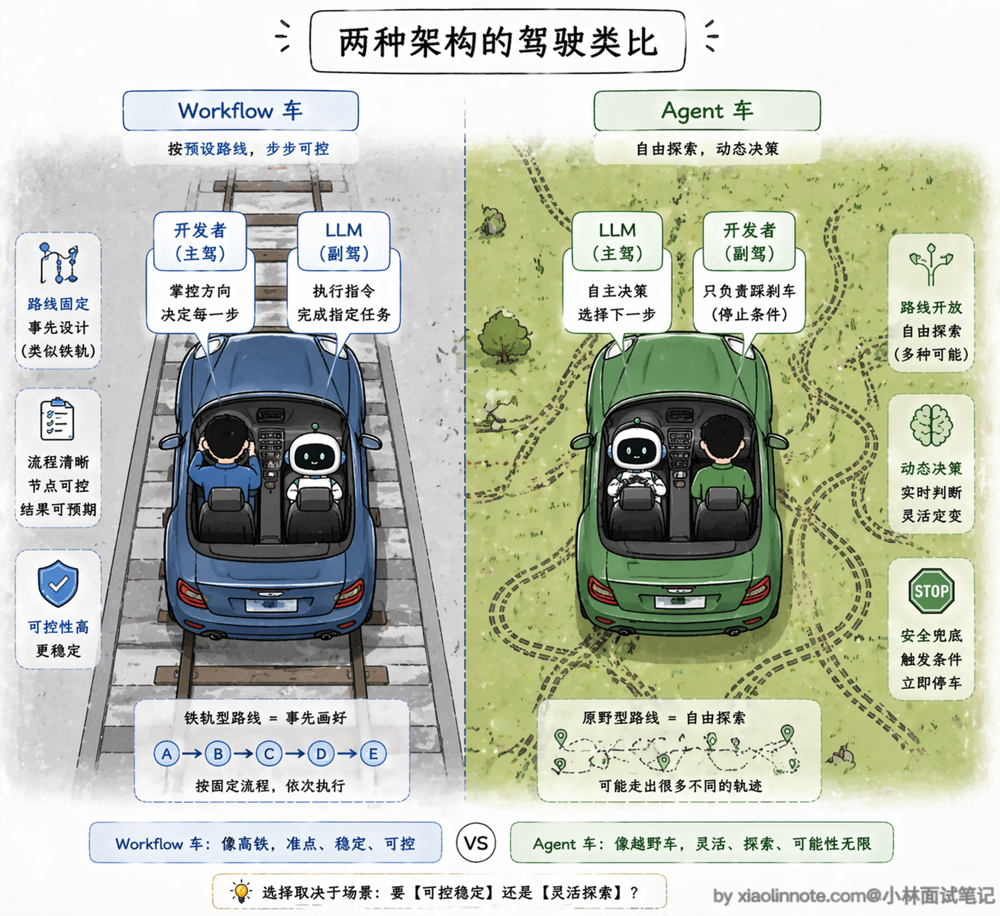
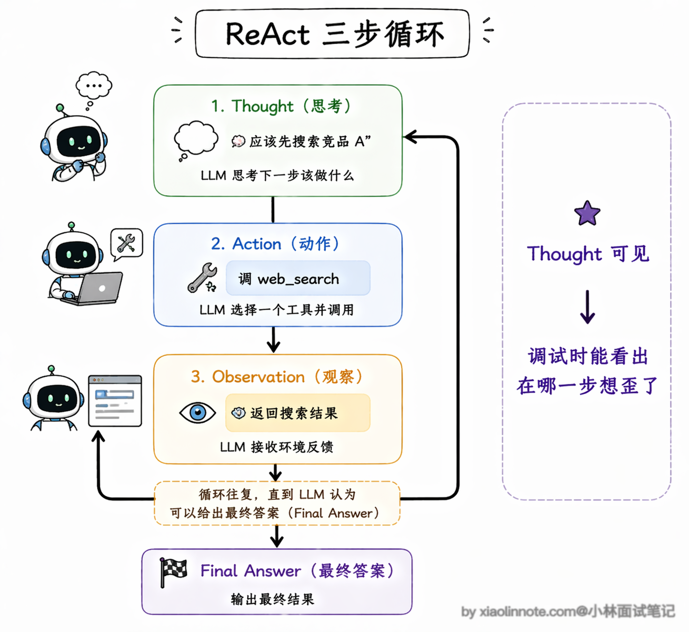
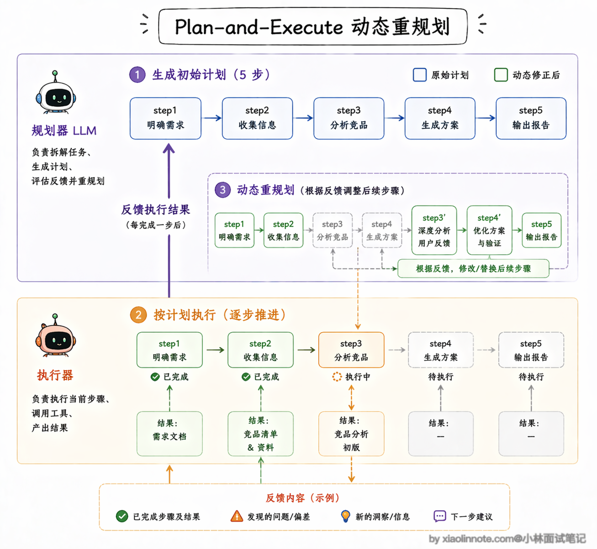
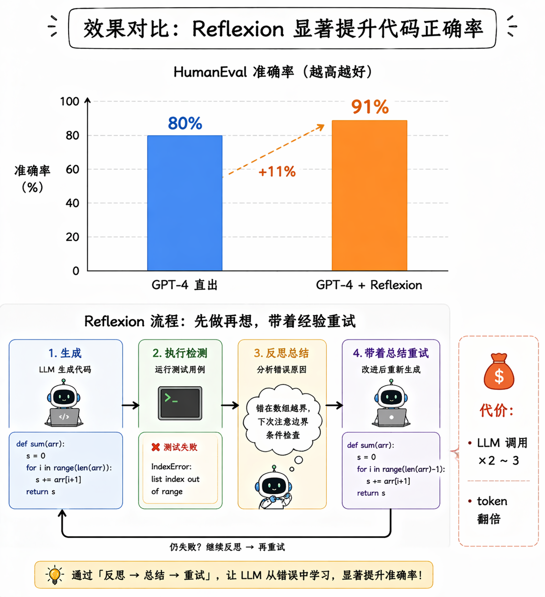
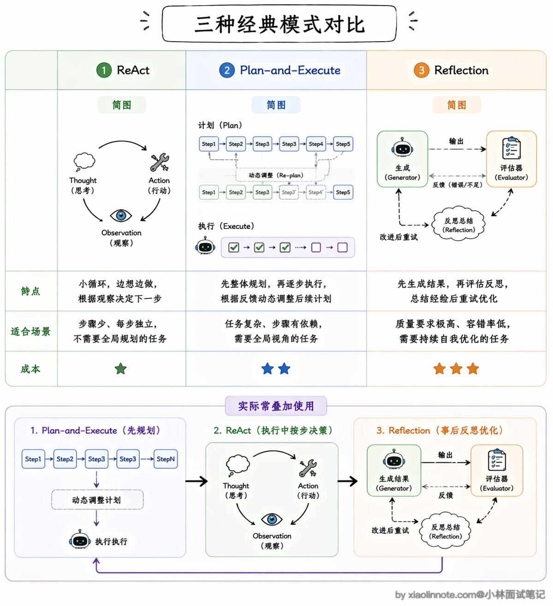
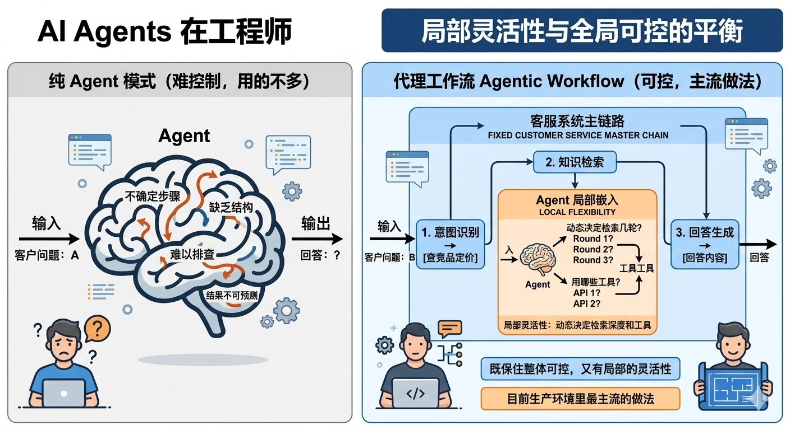
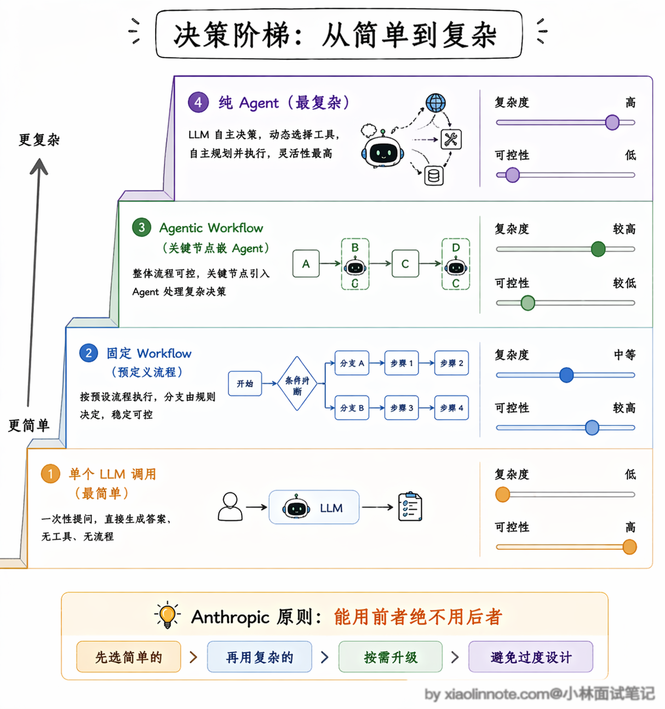

4. 了解哪些其他的 Agent 设计范式？Agent 和 Workflow的区别是什么？
👔面试官：你了解哪些 Agent 的设计范式？
🙋♂️我：有 ReAct，就是让模型先思考再行动，还有……多 Agent 协作那种。
👔面试官：多 Agent 协作是架构模式，不是设计范式。除了 ReAct，还有哪些？Reflection 知道吗？
🙋♂️我：Reflection 是反思，就是模型做完之后自己检查一遍？这应该是调试用的吧。
👔面试官：Reflection 是正式的设计范式，不是调试工具，它在执行流程里加了自我评估环节，能显著提升输出质量，但也有代价，你知道是什么代价吗？
🙋♂️我：多跑几次 LLM？会慢一点？
👔面试官：是 token 消耗和延迟都会增加。那我再问，生产环境里你会优先用纯 Agent 模式还是 Workflow？为什么？
好，这道题考的是你对 Agent 工程取舍的理解，咱系统说一下。
💡 简要回答
我理解 Agent 和 Workflow 最核心的区别是「谁来决定下一步」。Workflow 是我提前把流程写死的，每一步怎么走都是固定的，确定性高、好控制；Agent 是让 LLM 自己决定下一步做什么，灵活但不可控。
常见的设计范式除了纯 Agent 之外，还有 ReAct、Plan-and-Execute、Reflection 这几种。
我在实际工程里用得最多的反而是把两者混用，固定流程的部分用 Workflow，需要灵活决策的节点嵌入 Agent 能力，这样既保住了整体可控，又有局部的灵活性。
📝 详细解析
在 Agent 开发里有一个非常基础但经常被忽视的问题：什么情况下该用 Agent，什么情况下该用 Workflow？ 这是实际工程里最常碰到的架构决策，弄错了要么过度工程化，要么系统一点都不可控。
Workflow 和 Agent 的区别
先把两者的本质区别说清楚。Workflow 就是一个确定性的流程图，你提前定好「第一步做 A，A 完了做 B，B 失败了走分支 C」，每一步的逻辑都是你硬编码进去的，LLM 只是其中某个节点的执行工具，不负责决策流程本身。好处是行为完全可预测、容易测试、出了问题好排查；坏处是灵活性低，遇到你没预料到的情况就会走入死胡同。

Agent 则相反，它把「下一步做什么」这个决策权交给了 LLM。你只告诉它目标，它自己判断该调哪个工具、该不该继续、什么时候算完成。好处是能处理你事先没设计进去的情况；坏处是行为不确定，同样的输入可能走出不同的路径，线上出了问题也很难复现。
光说文字可能还不够直观，我用代码结构来对比一下，你一眼就能感受到区别：
# Workflow 风格：流程固定，每步都是确定的，LLM 只是工具
def workflow_answer_question(user_query: str):
# 第一步：固定做向量检索
docs = vector_db.search(user_query, top_k=5)
# 第二步：固定做 rerank（重排序，筛选最相关的结果）
reranked = reranker.rank(user_query, docs)
# 第三步：固定喂给 LLM 生成答案
answer = llm.generate(user_query, context=reranked)
return answer
# Agent 风格：流程不固定，LLM 自己在运行时动态决定每一步
def agent_answer_question(user_query: str):
while True:
# LLM 自己决定：要搜索？要计算？还是直接回答？
action = llm.decide(user_query, history=memory)
if action.type == "search":
result = vector_db.search(action.query)
memory.append(result)
elif action.type == "calculate":
result = calculator.run(action.expr)
memory.append(result)
elif action.type == "final_answer":
return action.content对比来看，Workflow 的每一行都是明确的指令，控制流完全由代码决定；Agent 的 loop 里只有 llm.decide()，所有路径都是 LLM 在运行时动态选的。两种风格在代码结构上就完全不一样，Workflow 是「开发者在驾驶」，Agent 是「LLM 在驾驶，开发者在副驾驶设了一些安全限制」。

Agent 三种设计范式
在具体的 Agent 设计范式上，目前主流的有这几种：
ReAct（Reasoning + Acting）是最常见的一种。
它的名字直接说明了它的核心机制：把推理（Reasoning）和行动（Acting）交替进行。具体来说，ReAct 的每一轮循环由三个步骤组成，形成一个完整的 Thought -> Action -> Observation 循环。
Thought 阶段，LLM 先把当前的情况分析一遍，把推理过程写出来，比如「用户想查竞品信息，我应该先用搜索工具查一下竞品 A 的最新动态」；Action 阶段，LLM 根据思考的结论决定调用哪个工具、传什么参数；Observation 阶段，工具返回的结果被反馈给 LLM，它读取这个结果，然后进入下一轮 Thought，重新分析当前局面、决定接下来怎么做。
为什么要把这三步显式地分开？因为如果让模型直接输出行动，它经常会「冲动决策」，比如还没搞清楚用户到底要什么就急着调工具。加了 Thought 环节之后，模型会先把问题理清楚，推理过程写出来了，决策质量自然就稳定多了。而且 Thought 的内容是可见的，出了问题你可以直接看它是在哪一步想歪了，调试起来方便很多。这个循环会不断重复，直到 LLM 在某轮 Thought 中判断「信息已经够了，可以给出最终答案」，整个 Agent 才停下来。

不过 ReAct 也有一个明显的短板：它是「走一步看一步」的模式，每一步都是局部最优决策，处理特别复杂的、需要全局规划的任务时，容易在中间迷失方向。比如一个需要十几步才能完成的研究任务，ReAct 可能做到第五步就忘了最初的目标是什么，或者反复在几个工具之间打转。
Plan-and-Execute 就是针对这个短板来的。
它把规划和执行彻底分开，先让一个 LLM 专门做规划，输出一个完整的步骤列表，然后由另一个 LLM（或同一个模型以不同角色）逐步执行。
规划和执行解耦之后，好处是复杂任务的整体结构非常清晰，你甚至可以在执行前让人工审核一下计划是否合理。
这里有一个非常关键的机制需要特别说一下：动态重规划。很多人对 Plan-and-Execute 的理解停留在「先做一个计划，然后死板地执行」，这其实是不对的。
成熟的 Plan-and-Execute 实现里，每执行完一步都会把结果反馈给规划器，规划器会判断：当前的执行结果和预期一致吗？后续的计划还适用吗？需不需要调整？如果发现某一步的结果和预期严重偏离，规划器会修改后续的步骤，甚至插入新的步骤来应对。
比如你原计划是「搜索竞品 A 的产品信息 -> 搜索竞品 B 的产品信息 -> 对比分析」，但执行第一步时发现竞品 A 刚刚发布了一个重大更新，规划器可能会动态插入一步「搜索竞品 A 最新更新的详细信息」，然后再继续后面的计划。
这种「计划是活的、会根据执行结果动态调整」的能力，让 Plan-and-Execute 既保持了全局视野，又不会因为死板而失效。缺点是多了规划和重规划的 LLM 调用，延迟和成本都会增加，而且如果初始规划本身的方向就做错了，后面不管怎么调整执行细节都很难挽回。

Reflection（反思） 则是在前两种范式的基础上加了一层「质量保障」。
它的做法是在 Agent 完成一步或者完成整个任务之后，再让一个 LLM（可以是同一个模型也可以是专门的评估模型）来判断做得好不好、结果是否符合预期。如果评估不通过，就重试或者换一种策略。这个机制能显著提升输出质量，尤其是在代码生成、文案写作这类「质量要求高但一次做对很难」的场景下效果特别明显。
Reflection 有一个非常值得关注的变体叫 Reflexion。它和基础 Reflection 的区别在于，Reflexion 不只是简单地说「这个结果不好，重做一遍」，而是会生成一段具体的「反思总结」，记录下这次失败的原因和改进建议，然后把这段总结作为额外的上下文传给下一次尝试。
你可以把它理解成「写错题本」，不是简单地重做一遍，而是先分析错在哪了、下次该注意什么，然后带着这些经验教训再做一次。
这个机制的效果是有数据支撑的：在 HumanEval 代码生成基准测试上，GPT-4 直接做的准确率大约是 80%，加上 Reflexion 之后提升到了 91%，这个提升幅度是非常可观的。不过代价也很直接，每加一轮反思就多一次甚至多次 LLM 调用，token 消耗和延迟都会增加，你需要在「质量提升」和「成本增加」之间做取舍。

那面试的时候如果被追问「这三种范式怎么选」，怎么回答？
其实核心看两个维度：任务复杂度和质量要求。如果任务步骤不多、每步都比较独立，ReAct 就够了，简单直接；如果任务很复杂、步骤之间有依赖关系需要全局统筹，Plan-and-Execute 更合适；如果对输出质量要求特别高、允许多花一些时间和成本，就在前面的基础上叠加 Reflection。实际项目里这三种范式也不是互斥的，很多系统会混合使用，比如用 Plan-and-Execute 做整体规划，每个步骤内部用 ReAct 来执行，关键步骤再加上 Reflection 做质量把关。

实际工程里，纯 Agent 模式其实用得不多，因为太难控制。

更常见的做法是**「Agentic Workflow」**，整体用 Workflow 框住主流程，在需要灵活处理的节点嵌入 Agent 能力。比如一个客服系统，意图识别 -> 知识检索 -> 回答生成这条主链路是固定的 Workflow，但「知识检索」这个节点内部可以用 Agent 来动态决定检索几轮、用哪些工具。这样既保住了整体可控，又有局部的灵活性，这是目前生产环境里最主流的做法。
Anthropic 在他们的工程博客里总结了一个非常实用的原则：能用 Workflow 解决的问题，就不要用 Agent。
这句话听起来有点反直觉，毕竟 Agent 更灵活、更「智能」，为什么不优先用呢？原因是在生产环境里，可控性比灵活性更重要。Workflow 的行为是确定的，出了问题你能精确定位是哪个节点出了错，修复起来也很快。
而 Agent 的行为是概率性的，同样的输入可能走不同的路径，测试覆盖率天然就低。
所以 Anthropic 的建议是，先从最简单的 Workflow 开始，只有当你发现某个节点确实需要灵活决策、写死的逻辑无法覆盖所有情况时，才把那个节点升级成 Agent。这个「从简单到复杂、按需升级」的思路，在面试里说出来是很加分的。

两种模式的核心差异，直接对照看更直观：
| 维度 | Workflow | Agent |
|---|---|---|
| 决策者 | 开发者（硬编码流程） | LLM（动态决策） |
| 确定性 | 高，行为完全可预测 | 低，同输入可能走不同路径 |
| 灵活性 | 低，流程固定 | 高，能处理预料之外的情况 |
| 调试难度 | 容易，链路清晰 | 困难，行为不确定 |
| 适用场景 | 流程相对固定的业务 | 需要灵活判断的复杂任务 |
🎯 面试总结
开头对话里踩了三个雷，要重点记住。
第一个雷是设计范式不熟，ReAct 是最常见的，但 Plan-and-Execute（把规划和执行解耦）和 Reflection（执行后加自我评估环节）也是必须说出来的，三个范式各有适用场景。
第二个雷是把 Reflection 当调试手段，它是正式的运行时机制，内嵌在 Agent 的执行流程里，代价是增加 token 消耗和延迟，这个取舍在面试里经常被追问。
第三个雷也是最重要的一个：以为 Agent 是生产环境的首选。实际上纯 Agent 模式在生产里用得很少，因为行为不确定、难以调试、成本容易失控。
真正的工程答案是 Agentic Workflow：整体用 Workflow 框住主流程保证可控，在需要灵活判断的节点嵌入 Agent 能力。能主动说出「为什么纯 Agent 在生产里有局限」，是这道题拿高分的关键。
对了，AI Agent的面试题会在「公众号@小林面试笔记题」持续更新，林友们赶紧关注起来，别错过最新干货哦！